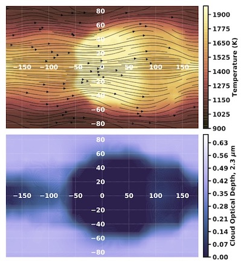
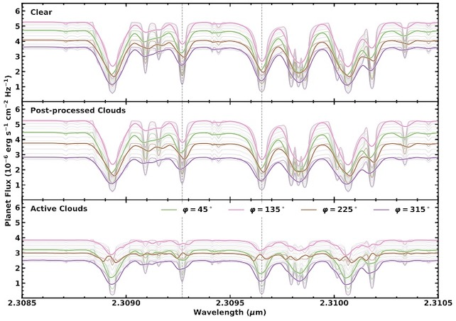
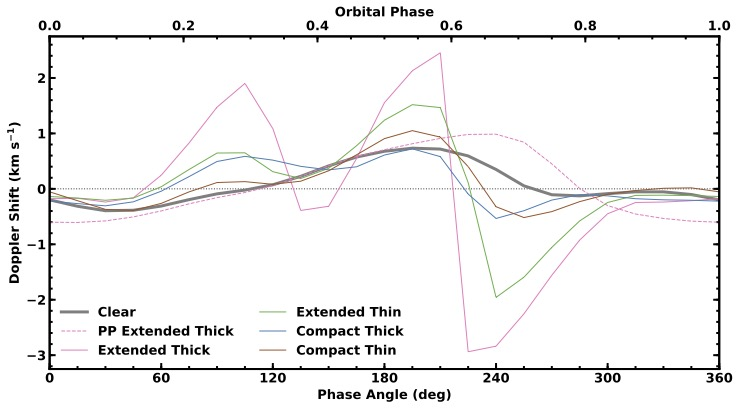

Figure 1. 2D maps of the temperature and wind (top) and cloud (bottom) distributions in a simulated hot Jupiter's atmosphere (Harada et al. 2021). Despite their intrinsically low abundance, Hot Jupiters are easily the most well-characterized class of exoplanets thanks to their large sizes, high masses, and hot temperatures (and therefore high signal-to-noise). However, much of the relevant physics underlying these planets remains mysterious, as there are no Solar System analogs and laboratory experiments in this regime are difficult. This makes interpreting observations of hot Jupiters challenging. Mineral clouds are a key example of atmospheric phenomena on hot Jupiters that likely influence observable quantities (such as thermal emission spectra), yet are poorly understood in terms of their physical properties, spatial extent, and sedimentation efficiency (to list a few things). Several different approaches to modeling clouds in hot Jupiter atmospheres have been developed that span a wide range of physical assumptions. By comparing observations to simulated expectations under different cloud model assumptions, we can better understand the nature of these exotic exoplanets.
Figure 2. Simulated high-resolution emission spectra from a cloudy hot Jupiter GCM (Harada et al. 2021). Observations of scattered light and thermal emission from hot Jupiter exoplanets have suggested the presence of inhomogeneous aerosols (i.e., clouds and hazes) in their atmospheres. 3D general circulation models (GCMs) that attempt to model the effects of aerosols have been developed to understand the physical processes that underlie their dynamical structures (e.g., Figure 1). In Harada et al. (2021), we investigated how different approaches to aerosol modeling in GCMs of hot Jupiters affect high-resolution thermal emission spectra at different phases of the planet's orbit. Using results from a GCM with temperature-dependent cloud formation, we calculated spectra of a representative hot Jupiter with different assumptions regarding the vertical extent and thickness of clouds. We then compared these spectra to models in which clouds are absent or simply post-processed (i.e., added subsequently to the completed clear model; Figure 2).
Figure 3. Effective net Doppler shift of the simulated planet's emission spectra as a function of orbital phase. (Harada et al. 2021). We showed that the temperature-dependent treatment of clouds in the GCM produces high-resolution emission spectra that are markedly different from the clear and post-processed cases, both in the continuum flux levels and line profiles, and that increasing the vertical extent and thickness of clouds leads to bigger changes in these features. We also evaluated the net Doppler shifts of the spectra induced by global winds and the planet's rotation and showed that they are strongly phase dependent, especially for models with thicker and more extended clouds (Figure 3). This work demonstrates the importance of radiative feedback in cloudy atmospheric models of hot Jupiters, as this can have a significant impact on interpreting spectroscopic observations of exoplanet atmospheres.